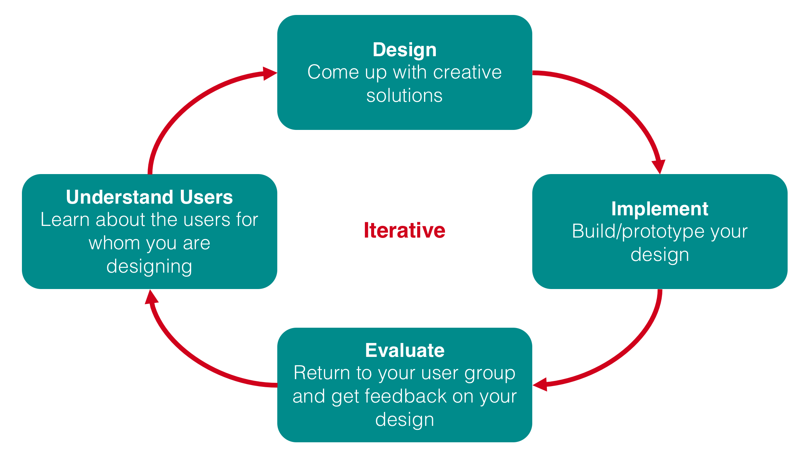
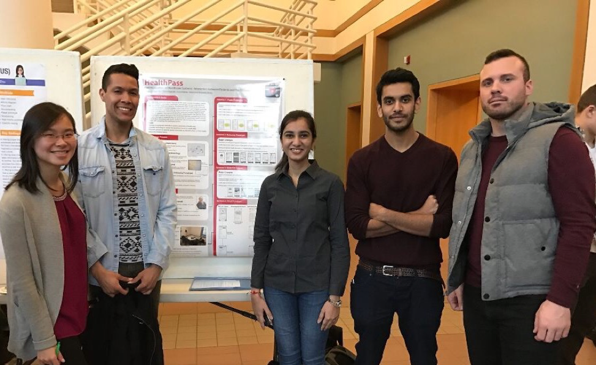

HealthPass is a project that I developed with my team for the HCI coursework (INFO 4940) under the supervision of Prof. Gilly Leshed at Cornell during Fall 2016.
We developed this application in response to data gathered during interviews with international students who expressed their frustration in dealing with the healthcare system in the United States. These patients told us about not being able to seamlessly transfer their basic medical information such as immunization and allergy records and not fully understanding what practitioners were communicating to them. To develop the application, we employed the use of a user-centered design process that included gathering insight from our target user population through feedback sessions. This allowed us to improve on our prototypes and through several iterations, we were able to design an application that most effectively responded to the needs of our target users.

We applied UCD process to develop the application prototype.
Reference: Prof. Leshed's HCI coursework
Based on the interviews with potential users, we identified five main goals that the users want to achieve through our application:
- Confidently respond to medical emergencies in both familiar and unfamiliar situations
- Be respected by medical professionals
- More involvement in the treatment decision-making process
- Clear communication with medical professionals despite language barriers
- Effective and efficient information transfer across the healthcare system
We followed a structured process to develop a design that brings along a solution to many of the mentioned problems. The overall process can be split into building interview guidelines, identifying stakeholders & users, deriving user needs and insights from these interviews, building an initial design concept, running brief evaluation sessions on the concept with real users, derive the insights from this interaction and build a high-fidelity prototype, run in-depth evaluation sessions with real users and then finally, with these new insights, develop a final prototype that solves previously identified UX problems.
- Idea Brainstorming
- Synthesizing ideas
- Identify potentional users and build interview guidelines
- Conduct user interviews for different focus groups
- Affinity diagram
- Develop personas from the user interviews
- Storyboarding the scenarios and use cases
- Create paper prototype
- Create low-fidelity prototype using Balsamiq
- User feedback and implement the improvements
- High Fidelity prototype using Sketch and InVision
- Heuristic evaluation
- Usability testing
- Final prototype with UX improvements incorporated using Sketch and InVision
Final prototype that we made using Sketch and Invision.
InVision Prototype
Here is a link to the abstract paper that we wrote (HealthPass-Abstract), showcasing the entire process followed for the project.

Team members (right to left)
Patrick Baginski, Sagar Akre, Charmi Mehta, Adisa Soren, Kaiwen Zhong